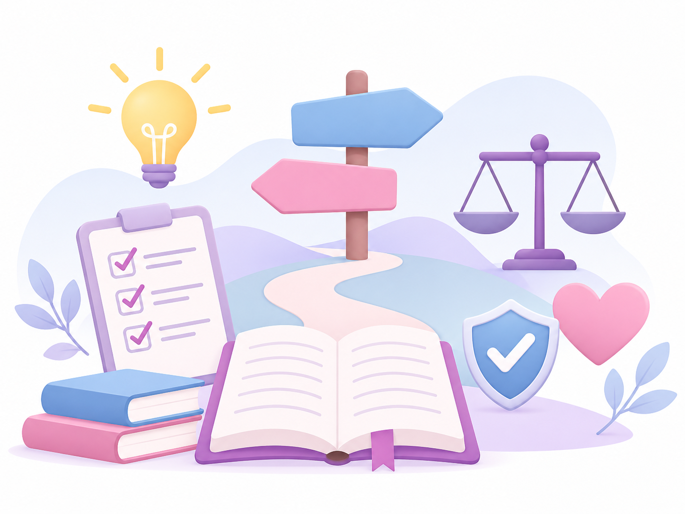
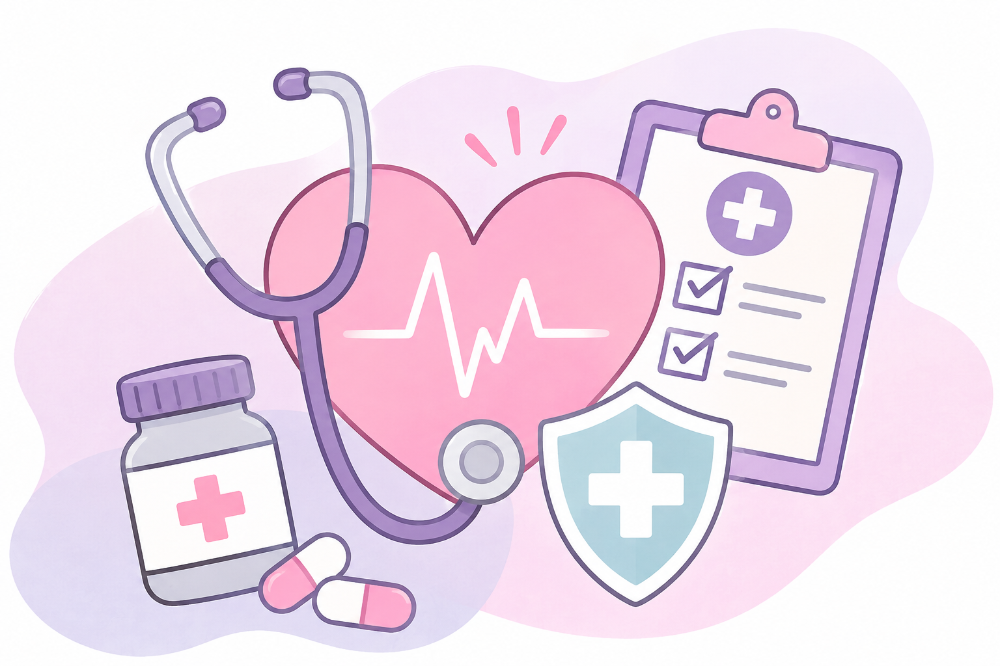
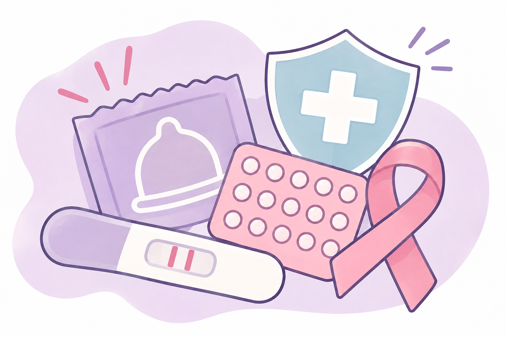
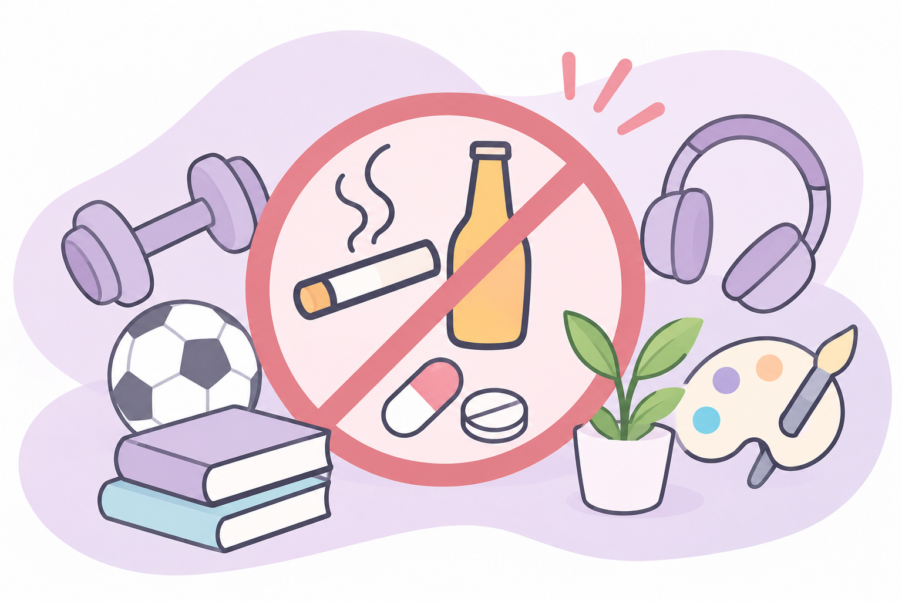
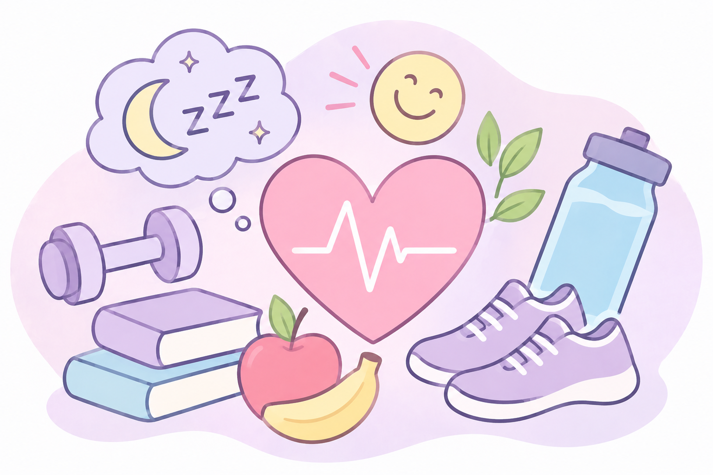

Catalina Martin
Camila Mendoza
Colegio Liceo Pallotti

Tomar decisiones responsables significa pensar antes de actuar, conocer las consecuencias y elegir lo mejor para nuestra salud y bienestar.

Todas las personas tenemos derecho a recibir atención médica, información confiable y orientación para cuidar nuestra salud física y mental.

Para cuidar nuestra salud sexual es importante utilizar preservativos, conocer los métodos anticonceptivos, realizar controles médicos y acceder a información confiable.

El alcohol, el tabaco y otras drogas pueden perjudicar nuestra salud. Para prevenir las adicciones debemos informarnos, evitar el consumo por presión social y buscar ayuda cuando sea necesario.
| Tema | Importancia |
|---|---|
| Decisiones responsables | Pensar antes de actuar. |
| Derecho a la salud | Cuidar nuestra salud y bienestar. |
| Prevención de ITS | Proteger nuestra salud sexual. |
| Prevención de adicciones | Evitar consumos perjudiciales. |

Tomar decisiones responsables es importante para nuestra vida. Nos ayuda a cuidar nuestra salud, respetar a los demás y prevenir riesgos.
Informarnos y pensar antes de actuar nos permite tomar mejores decisiones para nuestro presente y futuro.
Para conocer más sobre la salud, los derechos y las decisiones responsables, investigamos sobre el papa León XIV.
Seguir leyendo...